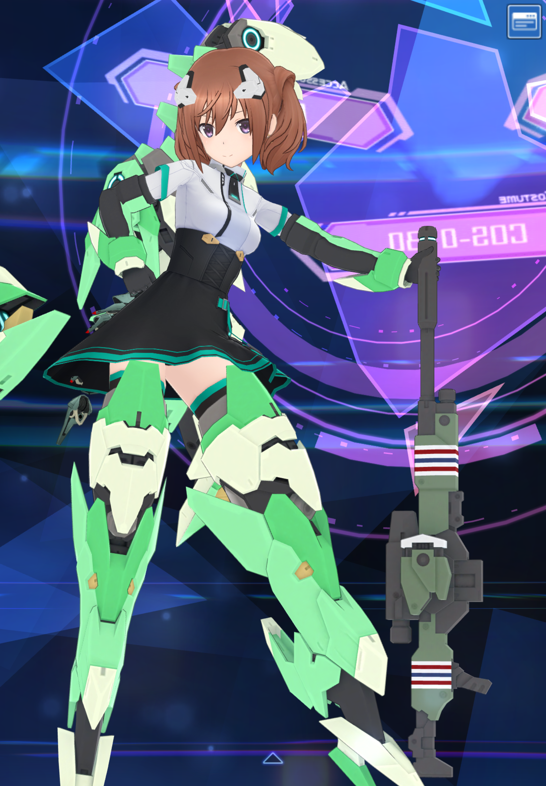
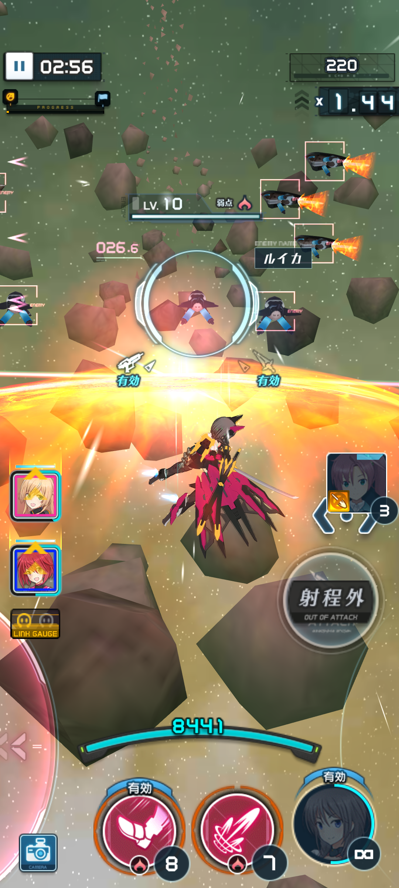
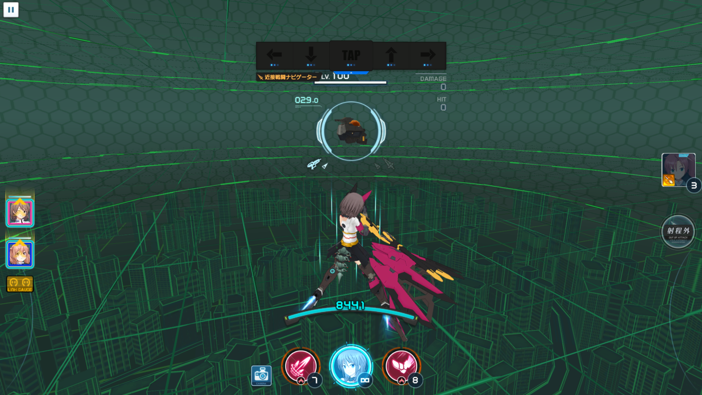
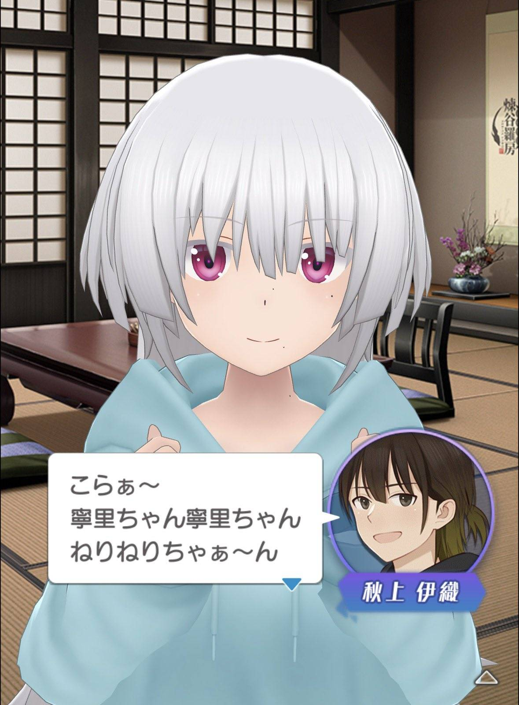
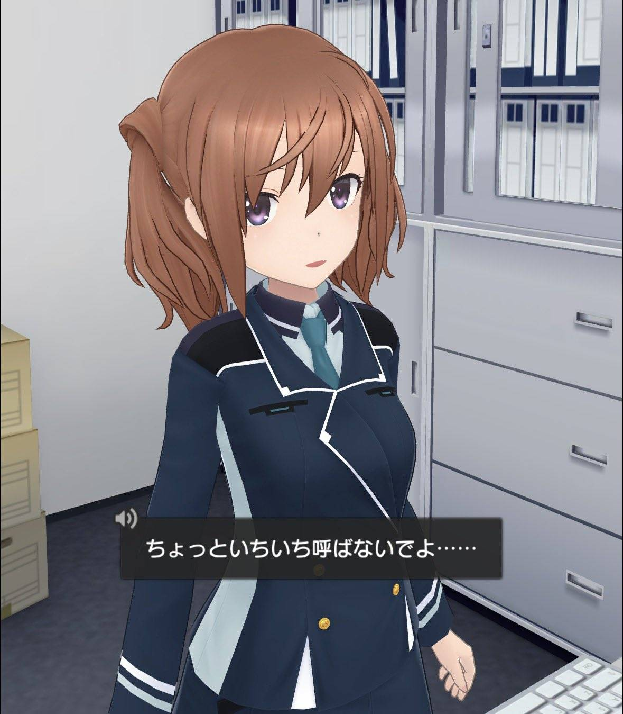

その他
若干おまけ程度になりますが自分が好きでやっているのブログに近いことを書いてみたかったのでその他を入れてみました
アリス・ギア・アイギス
まずアリスギア自体知っている人が見たことがないので少し説明すると
コロプラの配信する3Dシューティングゲーム、開発、運営はPyramidと言う会社であまり大きくないゲーム会社です
登場人物に複数のギア(装備)を取り付けていくカスタマイズ要素が魅力の一つで、キャラクターに装備できるギアはクロスギア(近接武器)、ショットギア(射撃武器)、トップス(腕用パーツ)、ボトムス(脚用パーツ)の四種があり、特定のキャラクターにしか装備できない専用ギアも用意されていたりしています

試しに自分のデータで載せてみました
この辺りから若干察すると思いますが自分の趣味に書いてあった模型製作と同じ"プラモデルっぽい感じ"でシューティングゲームができるようなゲームです
(詳しく話すと美プラを作っている感覚)

操作方法もシンプルで指一つで前後左右に動けて、大きくスライドすればダッシュ、フリックで回避、画面をタップすれば攻撃という具合に、片手持ちで気軽に遊べたりできます
自分はDMMGAMESとクロスプレイしてPCでのCSコントローラーを使って遊んでいます
(ゲームセンター頻繫に行っている人とか伝わると思いますがAC版のエクバ感覚で遊んでいます)

こんな感じでDMM版だと視野角広くアーケードゲームで遊んでいる感じかして一番やりやすいです
また3Dモデルビューアーとしてはスマホアプリとしては極めて高いレベルで表現されているためPCなどで運営しているソシャゲと同じくらい3Dに力が入っていてそれだけでもプレイする動機になるほどの出来のよさと思っています


またしっかり本編のストーリーも楽しく進めればマルチプレイで高難度戦ができたりスマホゲームというよりもCSゲーム ACゲームの様な遊びができるこだわりが融合した作品です
こんな感じでざっと紹介してみました
もっと載せたい所もありましたが長くなってしまうのでこうゆう雰囲気ゲームなんだと思ってください
試しに紹介ブログっぽい内容を書きたくこんな感じに作ってみました
また機会があって製作する際は時間を掛けて自由課題をやってみたいです
ここまで最後まで見てくださってありがとうございます